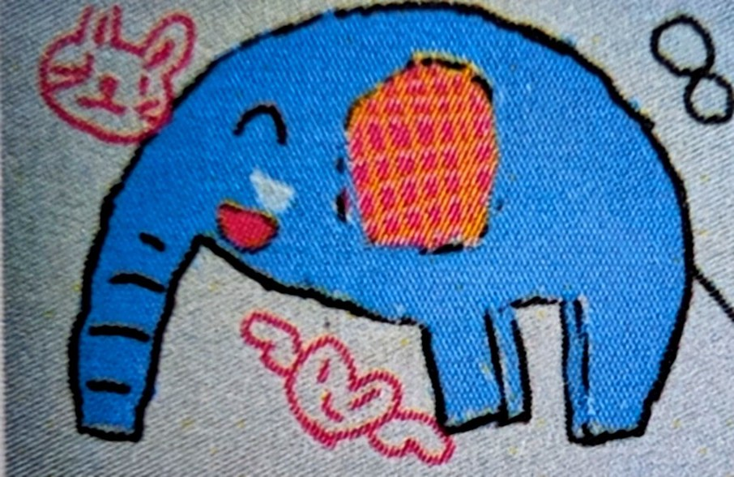

出雲市・大社町の居宅介護支援事業所「しあわせぞうさん」です。
経験豊富なケアマネジャーが、介護保険のご相談からケアプラン作成まで丁寧にお手伝いします。
受付：平日 9:00〜17:00 ※ご相談・ケアプラン作成の自己負担は0円です
FEATURES
居宅介護支援の費用は全額介護保険から給付されるため、ご利用者さまの自己負担はありません。安心してご相談ください。
管理者は上級資格である「主任介護支援専門員」。豊富な経験をもとに、医療・介護の関係機関と連携しながら最適なプランをご提案します。
特定の事業者にかたよらない公正中立なケアプラン作成が方針です。お忙しいご家族のために、LINEでのご連絡にも対応しています。
翻訳ソフトを使って、日本語での会話が難しい方やご家族のご相談にも対応できます。WhatsAppでのご連絡もOK。外国籍の方もどうぞ安心してご連絡ください。
SERVICE
居宅介護支援（ケアマネジャー）とは？
介護が必要になった方が、住み慣れたご自宅で安心して暮らし続けられるように支援する仕事です。次のようなお手伝いをします。
「何から始めればいいか分からない」という段階のご相談も歓迎です。ご本人・ご家族の意思を尊重し、一緒に考えます。
FLOW
お電話またはLINEでご連絡ください。介護保険が初めての方も大丈夫です。
ご自宅にお伺いし、お体の状態や生活のご様子、ご希望を丁寧にお聞きします。
ご本人・ご家族と相談しながら、必要なサービスを組み合わせたプランを作成します。
サービス開始後も毎月ご訪問し、状況の変化に合わせてプランを見直します。
ABOUT
| 事業所名 | 居宅介護支援事業所 しあわせぞうさん |
|---|---|
| 運営法人 | 合同会社しあわせぞうさん |
| 介護保険 事業所番号 | 3270403482 |
| 所在地 | 〒699-0731 島根県出雲市大社町遙堪663-25 |
| 電話 | 050-8893-1122 |
| FAX | 050-1799-0234 |
| 営業時間 | 平日 9:00〜17:00（土・日・祝日はお休み） |
| サービス 提供地域 | 出雲市（旧出雲市）、大社町 ※その他の地域も提供実績があります。ご相談ください |
| 管理者 | 石﨑 仁久（主任介護支援専門員） |
DOCUMENTS
当事業所の詳しい情報は、厚生労働省「介護サービス情報公表システム」でもご覧いただけます。
→ 介護サービス情報公表システム（しあわせぞうさんのページ）
CONTACT
介護のお悩み、お気軽にご相談ください。
📞 050-8893-1122受付時間：平日 9:00〜17:00 ／ FAX：050-1799-0234
〒699-0731 島根県出雲市大社町遙堪663-25
📍 Googleマップで地図を見る